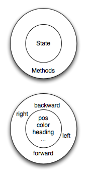

Classes e Objetos - Fundamentos¶
Programação orientada à objetos¶
O Python é uma linguagem de programação orientada à objetos, o que significa que ela possui recursos que dão suporte à programação orientada à objetos (POO).
A programação orientada à objetos tem suas origens na década de 1960, mas somente em meados da década de 1980 ela se tornou no principal paradigma de programação utilizado na criação de software. O paradigma foi desenvolvido como forma de tratar o rápido aumento no tamanho e complexidade dos sistemas de software e facilitar a modificação desses sistemas grandes e complexos ao longo do tempo.
Até agora, o paradigma de programação procedural foi utilizado em alguns programas que escrevemos. Na programação procedural o foco é na escrita de funções ou procedimentos que operam sobre os dados. Na programação orientada à objetos o foco é na criação de objetos que contem tanto os dados quanto as funcionalidades. Em geral, a definição de cada objeto corresponde a algum objeto ou conceito no mundo real e as funções que operam sobre tal objeto correspondem as formas que os objetos reais interagem.
Uma mudança de perspectiva¶
Nos capítulos anteriores escrevemos funções e as chamamos usando uma
sintaxe como desenheCirculo(tess). Isso sugere que a função é um
agente ativo, que diz algo como, “Ei, função desenheCirculo!
Aqui está um objeto tartaruga para você desenhar. “
Em programação orientada à objetos, os objetos são os agentes
ativos. Por exemplo, em nossa introdução às tartarugas, utilizamos um
estilo de orientação à objetos, de forma que nós escrevemos
tess.forward(100), que pede para a tartaruga se mover um certo
número de passos para a frente.
Uma chamada do tipo tess.circle() quer dizer “Ei tess! Por favor
use seu método circle!”
Essa mudança de perspectiva pode parecer mais educada, mas não necessariamente útil inicialmente. Em geral, transferir a responsabilidade da função para um objeto torna possível escrever funções mais versáteis e facilita a manutenção e reuso do código.
A vantagem mais importante do estilo de orientação à objetos é que ele
é mais adequado ao nosso processo mental de agrupamento e mais perto
da nossa experiência do mundo real.
No mundo real nosso método para cozinhar é parte do nosso
forno de microondas — nós não temos uma função cozinhar guardada
na gaveta do armário que nós passamos para o microondas.
Da mesma forma, usamos métodos do telefone celular para enviar um SMS, ou
mudar o seu estado para silencioso. As funcionalidades de um objeto do
mundo real tendem a ser intrínsecas a esse objeto. A POO nos permite
representar essas funcionalidades com precisão ao organizar nossos
programas.
Revisão de Objetos¶
Em Python, todo valor é na verdade um objeto. Seja uma tartaruga, uma lista, ou mesmo um inteiro, todos são objetos. Programas manipulam esses objetos realizando computações diretamente com eles ou chamando os seus métodos (ou seja, pedindo que esses objetos executem seus métodos). Para ser mais específico, nós dizemos que um objeto possui um estado e uma coleção de métodos que ele pode executar. O estado de um objeto representa as coisas que o objeto sabe sobre si mesmo. Por exemplo, como vimos com os objetos tartaruga, cada tartaruga possui um estado que representa a sua posição, sua cor, sua direção, etc. Cada tartaruga também tem a capacidade de se mover para a frente, para trás, ou virar para a direita ou esquerda. Cada tartaruga é diferente pois, embora sejam todas tartarugas, cada uma tem um estado diferente (como posições diferentes, ou orientações, etc).
Classes definidas pelo usuário¶
Nós já vimos classes como str, int, float e Turtle. Estas foram definidos pelo Python e disponibilizadas para nós usarmos. No entanto, em muitos casos quando estamos resolvendo problemas, precisamos criar objetos de dados
relacionados ao problema que estamos tentando resolver. Precisamos criar nossas próprias classes.
Como um exemplo, considere o conceito de um ponto matemático. Em duas dimensões, um ponto é representado por dois números (coordenadas) que são tratadas em conjunto como um único objeto.
Os pontos são muitas vezes escritos entre parênteses com uma vírgula
separando as coordenadas. Por exemplo, (0, 0) representa a origem, e
(x, y) representa o ponto x unidades para a direita e y unidades para cima da origem. Este (x, y) é o estado do ponto.
Pensando em nosso diagrama acima, podemos desenhar um objeto ponto como mostrado aqui.

Algumas das operações típicas que se associa com pontos poderiam ser a de pedir
o ponto pela sua coordenada x, getX, ou para pedir a sua coordenada y, getY. Você também pode calcular a distância de um ponto a partir da origem, ou a partir de outro ponto, ou encontrar um ponto médio de dois pontos, ou perguntar se um ponto está dentro de um dado retângulo ou círculo. Nós logo veremos como podemos organizar isso em conjunto com os dados.

Agora que entendemos como um objeto ponto deve se parecer, podemos definir uma nova classe.
Nós queremos que os nossos pontos tenham um atributo x e um y,
assim a nossa primeira definição da classe se parece com isso.
1 2 3 4 5 6 7 | class Point:
""" Point class for representing and manipulating x,y coordinates. """
def __init__(self):
""" Create a new point at the origin """
self.x = 0
self.y = 0
|
As definições de classes podem aparecer em qualquer lugar em um programa, mas são geralmente perto do início (após as comandos import). As regras de sintaxe para a definição de uma classe são as mesmas de outros comandos compostas. Há um cabeçalho
que começa com a palavra-chave class, seguido pelo nome da classe
e terminando com dois pontos.
Se a primeira linha após o cabeçalho de classe é um string, ele se torna o docstring da classe, e será reconhecido por diversas ferramentas. (Este é também a maneira como docstrings funciona com funções.)
Toda classe deve ter um método com o nome especial __init__.
Este método de inicialização, muitas vezes referido como o construtor, é chamado automaticamente sempre que uma nova
instância de Point é criada. Ela dá ao programador a oportunidade
de configurar os atributos necessários dentro da nova instância, dando-lhes
seus estaduais / valores iniciais. O parâmetro self (você poderia escolher qualquer outro nome, mas ninguém nunca faz!) é definido automaticamente para referenciar o objeto recém-criado que precisa ser inicializado.
Então, vamos usar a nossa nova classe Point agora.
(chp13_classes1)
Durante a inicialização dos objetos, criamos dois atributos chamados x e y para cada um, ambos com o valor 0. Você vai notar que quando você executar o
programa, nada acontece. Felizmente este não é bem o caso. De fato, dois Points foram criados, cada um com coordenadas x e y com valor 0. No entanto, como nós não pedimos aos pontos para fazerem alguma coisa, não vemos resultado algum.

O seguinte programa adiciona alguns comandos para impressão. Observe que a saída sugere que cada um é um objeto Point.
No entanto, observe que o operador is retorna False, o que significa que eles são objetos diferentes (vamos discutir mais sobre isso nos próximos capítulos).
(chp13_classes2)
Isso deve lhe parecer familiar — nós usamos classes antes para criar mais de um objeto:
from turtle import Turtle
tess = Turtle() # Instantiate objects of type Turtle
alex = Turtle()
As variáveis p e q recebem referências a dois novos objetos Point.
Uma função como Turtle ou Point que cria uma nova instância do objeto
é chamado de construtor, e cada classe fornece automaticamente uma
função construtora que tem o mesmo nome da classe.
Pode ser útil considerar que uma classe seja uma fábrica que faz objetos. A classe em si não é uma instância de um ponto, mas contém a maquinaria para fazer instancias de pontos. Cada vez que você chamar o construtor, você está pedindo à fábrica para lhe fazer um novo objeto. À medida que o objeto sai da linha de produção, o seu método de inicialização é executado para inicializá-lo com a configuração padrão de fábrica.
O processo combinado de “crie um novo objeto” e “inicialize com a configuração padrão de fábrica” é chamado instanciação.
Melhorando o Nosso Construtor¶
Até agora o nosso construtor só pode criar pontos na posição (0,0). Para criar um ponto na posição (7, 6) é preciso fornecer alguma capacidade adicional para passar informações para o construtor. Como os construtores são simplesmente funções com nomes especiais, podemos usar parâmetros (como vimos antes) para fornecer as informações específicas.
Nós podemos tornar o construtor da nossa classe mais geral, colocando parâmetros extras no método __init__, como mostrado neste exemplo.
(chp13_classes3)
Agora quando nós criamos novos pontos, podemos simplesmente fornecer os valores de x e y como argumentos. Quando o ponto é criado, os valores de initX e initY são atribuidos ao estado do objeto.

Adicionando Outros Métodos à Nossa Classe¶
A principal vantagem de usar uma classe como Point em vez de algo como uma simples
tupla (7, 6) agora se torna aparente. Podemos acrescentar métodos para
a classe Point que são operações úteis para trabalhar com pontos. Se tivéssemos optado por usar uma simples tupla para representar o ponto, não teríamos essa capacidade.
Criar uma classe como Point traz um “poder organizacional”
excepcional para nossos programas e para o nosso pensamento.
Podemos agrupar as operações que fazem sentido, e os tipos de dados
a que pertencem, e cada instância da classe pode ter seu próprio estado.
Um método se comporta como uma função, mas ele é chamado de uma instância específica. Por exemplo, com uma tartaruga chamada tesss, tess.right(90) pede ao objeto tess para executar o seu método right e virar 90 graus. Os métodos são acessados usando a notação de ponto.
Vamos adicionar dois métodos simples para permitir um ponto de nos dar informações sobre o seu estado. O método getX, quando invocado, irá retornar o valor da coordenada x. A implementação deste método é muito simples uma vez que já sabemos como escrever funções que retornam valores. Uma coisa a notar é que mesmo que o método getX não precise de qualquer outra informação como parâmetro para fazer o seu trabalho, ainda há um parâmetro formal, self. Como dissemos anteriormente, todo método definido em uma classe que opere em objetos dessa classe terá self como seu primeiro parâmetro. Mais uma vez, este serve como referência para o objeto em si, que por sua vez permite o acesso aos dados de estado no interior do objeto.
(chp13_classes4)
Da mesma forma, o método getY tem o mesmo jeito.
Vamos adicionar um outro método, distanceFromOrigin, para ver melhor como os métodos funcionam. Este método também não vai precisar de nenhuma informação adicional para realizar o seu trabalho, mas realizará uma tarefa mais complexa.
(chp13_classes5)
Note que o chamador de distanceFromOrigin não fornece nenhum argumento para suprir o valor do parâmetro self. Isso é verdade também para todas as chamadas de métodos. A definição sempre terá um parâmetro adicional (self) quando comparado a chamada.
Objetos Como Argumentos e Parâmetros¶
Você pode passar um objeto como um argumento da forma habitual. Nós já vimos
isso em alguns dos exemplos da tartaruga, onde a tartaruga é passada para
alguma função como drawRectangle para que a função possa
controlar e usar qualquer instância de tartaruga que lhe seja passada.
Esta é uma função simples que envolve nossos novos objetos Point.
(chp13_classes6)
distance recebe dois pontos e retorna a distância entre eles. Note que distance não é um método da classe Point. Você pode ver isso pelo padrão de tabulação, que não está dentro da classe Point. Outra forma para sabermos que distance não é um método de Point é que self não está incluido como parâmetro formal. Além disso, nós não chamamos distance usando a notação de ponto.
Conversão de um Objeto para um String¶
A maioria dos programadores de orientação à objetos não fariam o que acabamos de fazer em print_point. Quando trabalhamos com classes e objetos, uma alternativa é incluir um novo método na classe, mas não gostamos de métodos tagarelas que chamam print. A melhor alternativa é ter um método para que toda instância possa produzir um string que o represente. Vamos inicialmente chamar esse método de to_string:
(chp13_classesstr1)
A função print mostrada acima produz um string que representa o Ponto p. O padrão fornecido pelo Python diz que p é um objeto do tipo Point. No entanto, ele não diz nada sobre o estado específico do ponto.
Nós podemos melhorar esta representação se incluirmos um método especial chamado __str__. Observe que este método usa a mesma convenção de nomes como o construtor, que é dois sublinhados antes e depois do nome. É comum no Python
utilizar essa técnica para dar nomes aos métodos especiais.
O método __str__ é responsável por retornar uma representação na forma de um string, tal como definido pelo criador da classe. Em outras palavras, você, como programador, deve escolher como um Point deve ser impresso. Neste caso, decidimos que a representação em string irá incluir os valores de x e y, bem como algum texto de identificação. É necessário que o método __str__ crie e retorne um string.
(chp13_classesstr2)
Quando executar o programa acima, você pode ver que a função print agora mostra o string que escolhemos.
Agora, você pode perguntar, mas já não temos uma função de conversão de tipo str que pode transformar o nosso objeto em um string? Sim, nós temos!
E o print já não usa essa função automaticamente ao imprimir as coisas? Sim, de novo!
Mas esses mecanismos automáticos ainda não fazem exatamente o que queremos. O Python fornece muitas implementações padrão para métodos que nós, como programadores, provavelmente desejamos alterar. Quando um programador muda o significado de um método especial dizemos que substituimos o método. Note também que a função str para conversão de tipo usa o método __str__ que nós fornecemos.
Instâncias e Valores de Retorno¶
Funções e métodos podem retornar objetos. Esta é, na verdade, nada de novo, já que tudo em Python é um objeto e temos retornado valores por algum tempo. A diferença aqui é que nós queremos que o método crie um objeto usando o construtor e depois que retorne o novo objeto como o valor do método.
Suponha que você tenha um objeto ponto e deseja encontrar o ponto médio entre ele e algum outro ponto alvo. Nós gostaríamos de escrever um método, chamado de halfway que recebe outro Point como parâmetro e retorna o Point que está a meio caminho entre o ponto e o alvo.
(chp13_classesmid1)
O ponto resultante, mid, tem um valor de x de 4 e um valor de y de 8. Nós também podemos usar qualquer outro método de mid pois ele é um objeto Point.
Glossário¶
- atributo
- Um dos itens nomeados de dados que compõem uma instância.
- classe
- Um tipo de composto definido pelo usuário. Uma classe também pode ser pensada como um modelo para os objetos que são instâncias da mesma. (O iPhone é uma classe. Até dezembro de 2010, as estimativas são de que 50 milhões de instâncias tinham sido vendidas!)
- construtor
- Cada classe tem uma “fábrica”, chamada pelo mesmo nome da classe, por fazer novas instâncias. Se a classe tem um método de inicialização, este método é usado para obter os atributos (ou seja, o estado) do novo objeto adequadamente configurado.
- instância
- Um objeto cujo tipo é de alguma classe. Instância e objeto são usados como sinônimos.
- instanciar
- Significa criar uma instância de uma classe e executar o seu método de inicialização.
- linguagem orientada a objetos
- Uma linguagem que fornece recursos, como as classes definidas pelo usuário e herança, que facilitam a programação orientada a objetos.
- método
- Uma função que é definida dentro de uma definição de classe e é chamado em instâncias dessa classe.
- método de inicialização
- Um método especial em Python (chamado
__init__) que é chamado automaticamente para configurar um objeto recém-criado no seu estado inicial (padrão de fábrica). - objeto
- Um tipo de dados composto que é frequentemente usado para modelar uma coisa ou conceito do mundo real. Ele agrupa os dados e as operações que são relevantes para esse tipo de dados. Instância e objeto são usados como sinônimos.
- programação orientada a objetos
- Um estilo poderoso de programação em que os dados e as operações que os manipulam são organizados em classes e métodos.
Exercícios¶
Escreva uma função
distanciaque recebe doisPoints como parâmetros e retorna a distância euclidiana entre eles.Crie um método
reflect_xna classe Point que retorna um novo Point, que é a reflexão do ponto no eixo x. Por exemplo,Point(3, 5).reflect_x()é (3, -5)Crie um método
slope_from_originque retorna a inclinação da linha que liga o ponto à origem. Por exemplo,>>> Point(4, 10).slope_from_origin() 2.5
Quais os casos onde esse método falha?
A equação de uma reta é “y = ax + b”, (ou talvez “y = mx + c”). Os coeficientes a e b são suficientes para descrever a linha. Escreva um método na classe Point que recebe outra instância de Point e calcula a equação da reta que liga os dois pontos. O método deve retornar os dois coeficientes na forma de um tuple com dois valores. Por exemplo,
>>> print(Point(4, 11).get_line_to(Point(6, 15))) >>> (2, 3)
Isso nos diz que a equação da linha que liga os dois pontos é “y = 2x + 3”. Quais os casos onde esse método falha?
Dados quatro pontos sobre uma circunferência, encontre o ponto centro da circunferência. Quando a sua função falha?
Dica: Você deve saber como resolver o problema geometricamente antes de fazer qualquer coisa relacionada a programação. Você não pode programar uma solução para um problema se você não entende o que você quer que o computador faça.